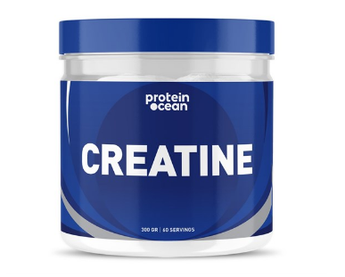
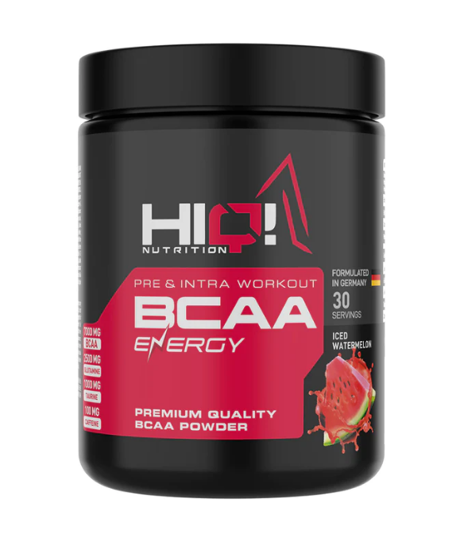
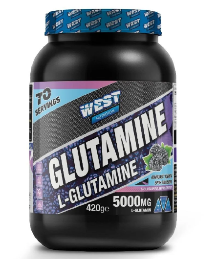

En Çok Tercih Edilen Toz Supplementler
Protein Tozu
- Glutatyon (vücudun su bazlı ana antioksidanı) seviyelerinin artmasına destek olur.
- Kandaki trigliserit değerlerinin düşürülmesini destekler.
- Kötü kolesterolün düşürülmesine, HDL yani iyi kolesterol seviyelerinin artmasına yardımcı olur.
- Günlük almanız gereken protein miktarının eksik kalan kısmını tamamlamanıza yardımcı olur.
- Antrenman sonrası toparlanma süresini düşürüp, aşırı antrenman sonrası oluşan semptomların azaltılmasına yardımcı olur.
- Bağışıklık fonksiyonlarının desteklenmesine yardımcı olur.
- Yapacağınız iyi bir egzersiz planlamasıyla var olan kas kütlenizin artmasına yardımcı olur.

Kreatin
- Kreatinin tek bir egzersiz seansında yapılan toplam işin arttırılmasını sağlar.
- Kaslarda uydu hücre sinyallerini arttırır, kas onarımı ve kas büyümesine yardım eder.
- Anabolik yani kasları büyüten IGF-1 gibi hormonlar artar.
- Kas hücreleri içine su çekerek hücre hacmini arttırır, kas kitlesindeki artışın bir kısmı bununla ilişkili olabilir.
- Protein yıkımını azaltır.
- Miyostatin seviyesinin artması yeni kas büyümesini yavaşlatabilir veya durdurabilir. Kreatin takviyesi miyostatini azaltarak büyüme potansiyelini arttırabilir.
- Yüksek yoğunluklu egzersiz performansını ve kuvveti arttırır.

BCAA
- Egzersiz sırasında yorgunluğu azaltır.
- Kas ağrılarının azalmasına yardımcı olur.
- Kas kütlesinin artmasını sağlar.
- Kas kaybını önler.

L-Glutamine
- Protein oluşturmak ve diğer işlevleri yerine getirmek için kullanılır.
- Bağırsak ve bağışıklık hücreleri için bir enerji kaynağıdır.
- Bağırsaklar ve vücudunuzun geri kalanı arasındaki bariyerin korunmasına yardımcı olur.
- Egzersiz sırasında ve sonrasında oluşan yorgunluğu veya kas ağrısını azaltır.
